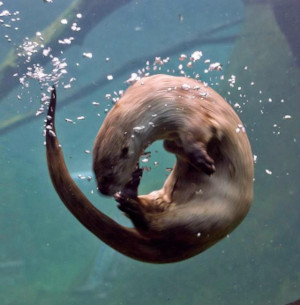

Noodles
Otters are known to "juggle" stones, theories suggest they do this for fun, hunger and/or cognitive abilities. Some otters will keep the same rock their entire lives.
Fast Facts
- Scientific Name: Enhydra Lutris
- Conservation Status: Endangered
- Lifespan: approx. 23 years
- Adult Weight: 65 lbs
- Diet: Hard Shelled Marine Invertebrates
- Behaviour: Foragier
The sea otter can live its entire life without leaving the water, they often hold paws to keep them from drifting away while they sleep.
Unlike most marine mammals, they don't have a layer of blubber. But, they do have the thickest fur of all animals.